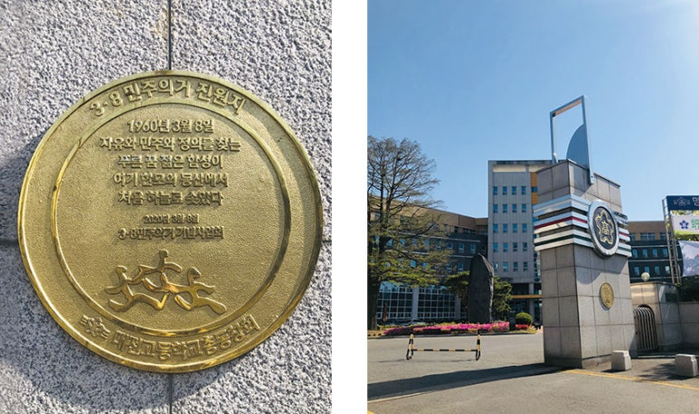
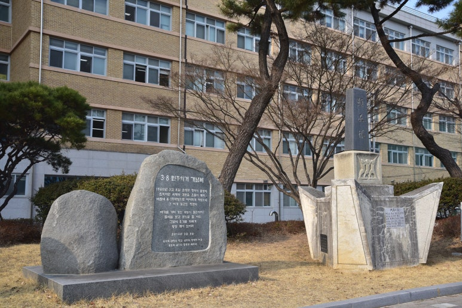
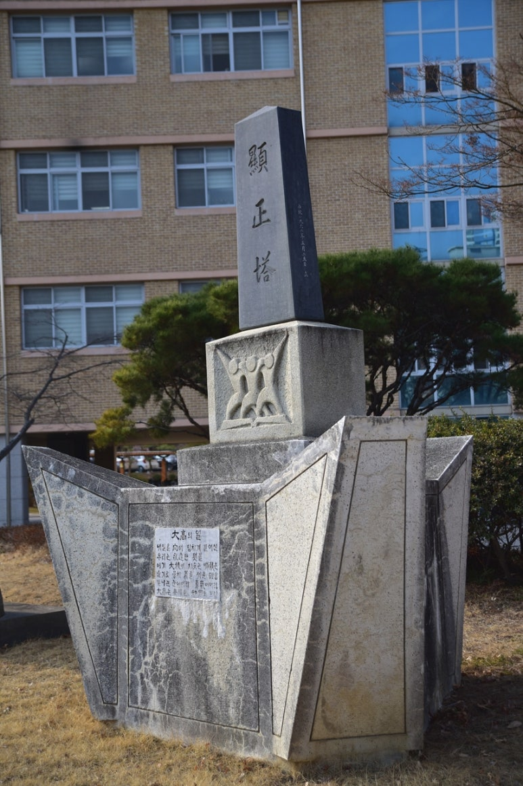
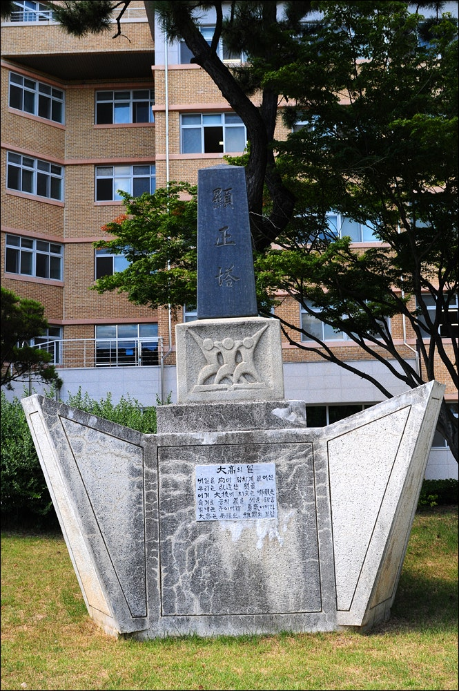
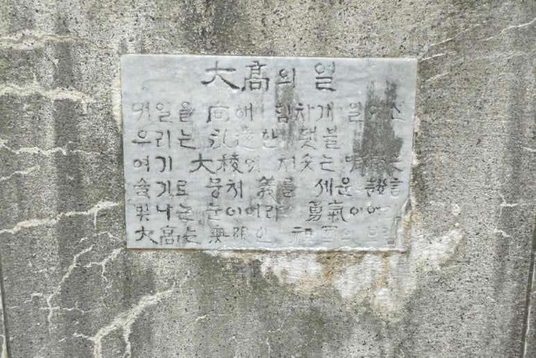
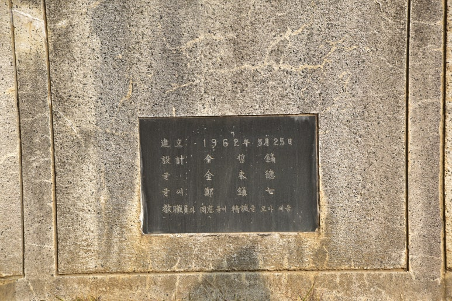
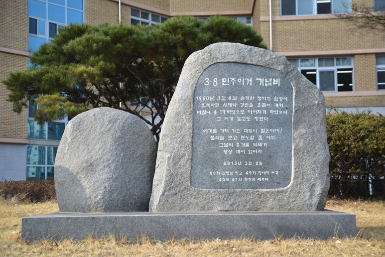
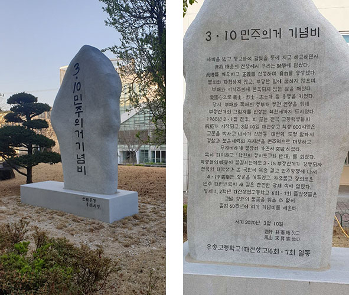
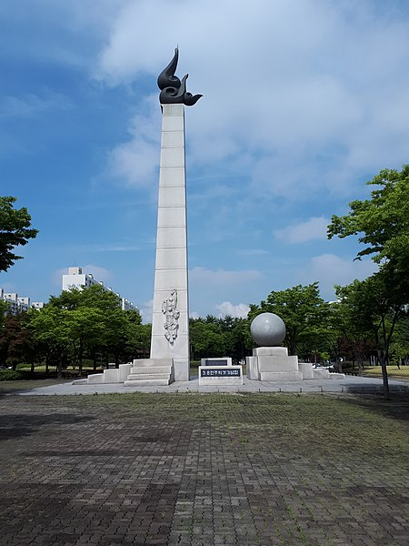
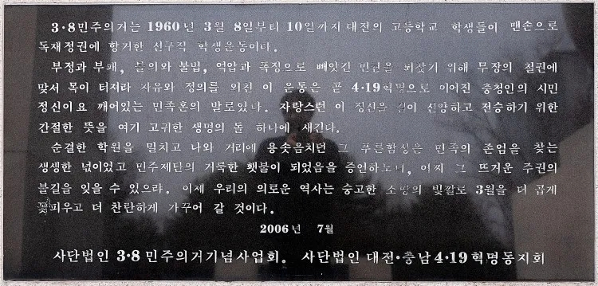

▣ 3. 8 대전민주 학생의거(大田學生民主義擧)
◆ 대전고등학교 현정탑(顯正塔)과 『3·8민주의거 기념비』

대전고등학교 3·8민주의거 진원지 표지판

대전고등학교 『3·8민주의거 기념비』와 현정탑(顯正塔)

대전광역시 중구 대흥동 320-2, 대전고등학교 승리관 앞 『현정탑(顯正塔)』
대전고는 1962년 4·19혁명 과정에서 목숨을 잃은 대전고등학교 졸업생 중 서울대 손중근(36회), 경희대 이기태(36회), 중앙대 고병래(37회) 세 동문의 애국정신을 기려 교내 동산에 ‘현정탑(顯正塔)’을 세웠다.

대전고 현정탑(顯正塔)
비석 : 54 x 27 x 138㎝, 좌대상 : 90 x 60 x 70㎝, 좌대하 : 122 x 90 x 30㎝,
기단 : 335 x 335 x 180㎝(삼각형), 향석 : 53 x 38 x 35㎝, 전체 : 높이 388㎝

大高(대고)의 얼
내일을 向(향)해 힘차게 일어선 우리는 永遠(영원)한 횃불
여기 大校(대교)에 치솟는 喊聲(함성)은 슬기로 뭉쳐 美(미)를 세운 證言(증언)
빛나는 눈이어라. 勇氣(용기)이어라. 大高(대고)는 無限(무한)한 祖國(조국)의 보람

1962년 5월 25일 건립 설계 金哲鎬(김철호), 글 金永德(김영덕), 글씨 鄭鎭七(정진칠)
敎職員(교직원)과 同窓(동창)들이 精誠(정성)을 모아 세음(김영덕과 정진칠은 36회졸업자들의 담임선생님)

대전고등학교 『3·8민주의거 기념비』
주소 : 대전광역시 중구 대흥동 320-2 (대전고 교정) │ 2013년 3월 8일 건립
대전고등학교 『3·8민주의거 기념비』[내용]
1960년 3월 8일 순정한 정의의 함성이/
침묵하던 시대와 강산을 흔들어 깨워/
마침내 4·19혁명으로 이어지게 하였으니/그 의기 높고도 장했다//
여기를 거쳐가는 대능의 젊은이여!/
불의를 보고 분노할 줄 아는/
그날의 용기를 되새겨/항상 깨어있어라
2013년 3월 8일 40회 김정남 짓고 48회 정태희 쓰고 40회, 41회 동창회 세우다
◆ 대전 우송고등학교(구 대전상고) 『3.10 민주의거 기념비』

대전 우송고등학교(구 대전상고) 『3.10 민주의거 기념비』
주소 : 대전광역시 동구 동대전로131번길 53 우송고등학교(구 대전상고)
3.10 민주의거 기념비[후면 내용]
새벽을 밟고 등교하여 달빛을 등에 지고 하교하면서 靑苑 배움의 전당에서 우리는 勉學에 힘썼다. 眞理를 깨우치고, 正義를 신봉하며, 自由를 숭상했다. 불의와 타협하지 않고, 부당한 힘에 굽히지 않으며, 부패와 이기주의에 현혹되지 않는 삶을 배웠다. 愛國心으로 義士·烈士·志士가 될 용맹을 키웠다. 당시, 부패와 독재의 정부가 정권 연장을 위해 부정선거의 그림자를 신성한 학원에까지 드리웠다.
1960년 3·1절 전후, 피 끓는 전국 고등학생들의 抗拒가 시작되고, 3월 10일 대전상고 학생 600여명은 교문을 박차고 나아가 신안동 대전역, 도청 앞까지 경찰과 불온세력의 저지선을 맨주먹으로 대항하고 무자비하게 붙잡혀 가면서 突破 하였다.
목이 터지라고 「학원의 정치도구화 반대」를 외쳤다. 학생들의 喊聲이 물결치는데도 3·15 부정선거가 강행되자 전국의 대학생과 온 국민이 목숨 걸고 민주항쟁에 나서 4·19義擧는 성공을 거두었고, 자유롭고 정의로운 민주 대한민국의 새 길은 찬연한 광채 속에 열렸다.
당시 1,2학년 대전산업고등학교 5회·7회 졸업생들은 그날 청원의 불꽃을 잊을 수 없어 졸업 60주년에 여기 기념비를 세운다.
서기 2020년 3월 10일 遇軒 朴憲唔 짓고 鳳山 宋 昇 憲 쓰다 우송고등학교(대전상고) 6회·7회 일동
◆ 대전 둔지미공원의 『3·8 민주의거 기념탑』


대전 둔지미공원의 『3·8 민주의거 기념탑』
3·8민주의거는 1960년 3월 8일부터 3월 10일까지 자유당 독재정권의 부정과 부패, 불법적 인권유린에 대항하여 대전지역 고등학생들이 민주와 자유, 정의를 위한 순수한 열정으로 불의에 항거한 민주화 운동이다.
3·8민주의거는 충청권 최초의 학생운동이며 지역민주화운동의 효시로 역사적 교훈과 가치가 큰 것이며 대구의 2·28, 마산의 3·15와 함께 4·19혁명의 단초로서 중대한 의의를 새길 수 있는 것이다.
마지막으로 『3.8민주의거 기념탑』에 새겨진 김용재 시인의 시 '증언의 얼굴'을 소개하며, 이 글을 마친다.
증언의 얼굴 - 김 용 재 -
천둥하는 몸짓 출렁였다
가슴 터지는 아우성 드높았다
1960년 3월 8일
민주의 목숨을 위해
자유의 광명을 찾아
파도처럼, 대전의 학생의거
양양했다 - 우뚝했다
무지한 총부리도
비겁한 방망이도
못난 바리게이트도
모두 기세를 잃고
정의의 깃발로 올린
역사의 불꽃 진실로 뜨거웠다
시대의 검은 장막을 뚫고
저 눈부신 하늘 향해
증언의 얼굴로 탑이 서다
[출처] 『4·19학생혁명 기념비·탑·묘지(紀念碑·塔·墓地)』 -▣2·28대구학생의거大邱學生義擧▣3·8대전학생민주의거大田學生民主義擧▣3·15마산학생의거馬山學生義擧▣4·19학생혁명學生革命|작성자 ohyh45
https://blog.naver.com/ohyh45/223839588293